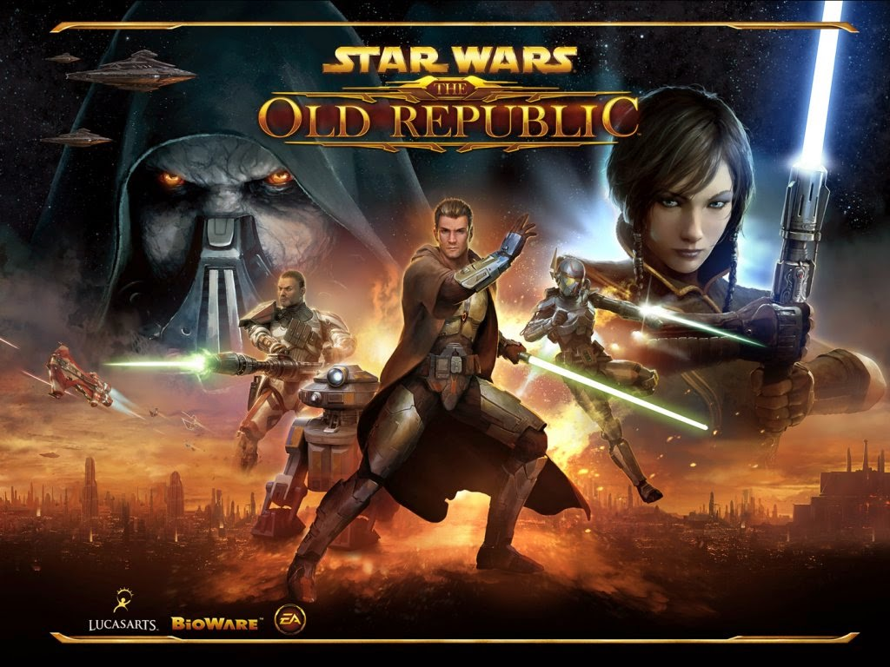
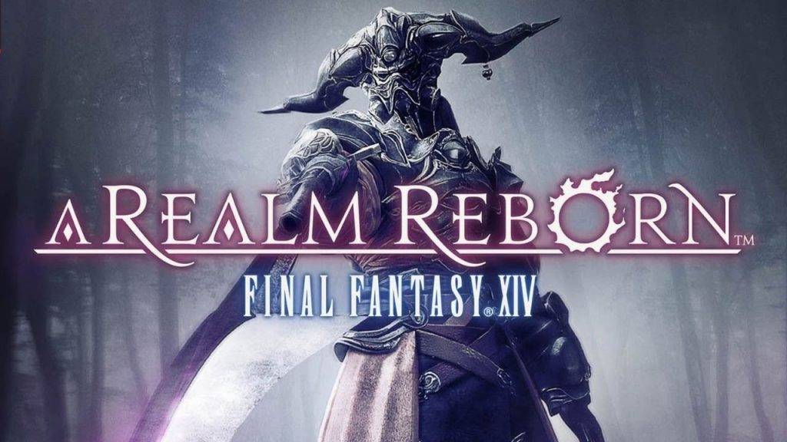

Star Wars: The Old Republic is a Massive Multiplayer Online Role-Playing game developed by BioWare Austin and Bioware Edmonton.
It was released in 2011 and is still going strong today. It is set in the Star Wars universe 300 years after the events of the Knights of the Old Republic games (another classic series).
It is a free to play game with a subscription option. It is only available on PC. I've played since its release and have been hooked ever since.

Final Fantasy XIV: A Realm Reborn is a Massive Multiplayer Online Role-Playing game developed by Square Enix.
It was released in 2013 and is still going strong today. In the last two years it actually dethroned WoW from its top spot for a little bit
in the amount of subscribers it has. It is set in the Final Fantasy universe.
It is a free to play game with a subscription option. Though I don't really think its much for the free to play since it only gives you a small amount.
Currently it has four expansions with a fifth on the way coming in 2025.
It is available on PC, PS4, and PS5. I've played since its original release and re-release. Another Must have in my opinion.